배우기 전에 먼저 해 보세요. 틀려도 괜찮아요.
Ich lasse mein Fahrrad reparieren.에서 자전거는 누가 고치나요?
lassen과 Infinitiv는 그 일을 남에게 맡긴다는 뜻이에요.
statt zu fliegen은 무슨 뜻일까요?
statt … zu는 '~하는 대신'이에요.
B1.2 Perspektiven · Lektion 3
환경과 지속 가능성
음성은 준비 중이에요. 듣기 단추와 받아쓰기는 음성이 올라오면 쓸 수 있어요. 그동안은 글을 읽으면서 공부해요.
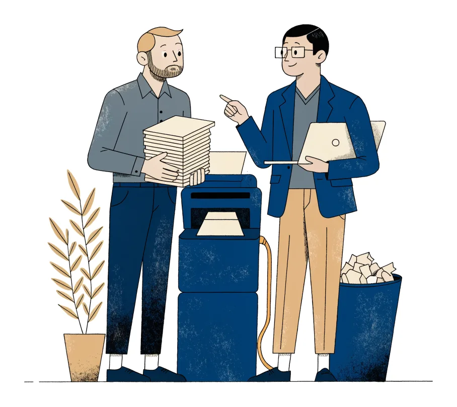
환경 문제는 뉴스에서만이 아니라 부엌과 사무실에서도 이야기해요. 무엇이 문제인지 설명하고, 이렇게 하자고 제안하고, 찬성하거나 반대할 수 있어야 해요. 이 과에서는 남에게 맡기는 일을 말하는 lassen, '~하는 대신'의 statt … zu, '~하지 않고'의 ohne … zu를 배워요. B1.1에서 배운 Passiv도 다시 써 봐요.
문법 lassen, statt … zu, ohne … zu, Passiv (Wiederholung)
과제대학캠퍼스 환경 프로젝트를 제안하는 글 쓰기
과제직장사무실에서 자원을 아끼는 방안 제안하기
이 과를 마치면 환경 문제를 설명하고, 해결책을 제안하고, 찬성과 반대를 말할 수 있어요.
이 과에서 쓸 말이에요.
배우기 전에 먼저 해 보세요. 틀려도 괜찮아요.
Ich lasse mein Fahrrad reparieren.에서 자전거는 누가 고치나요?
lassen과 Infinitiv는 그 일을 남에게 맡긴다는 뜻이에요.
statt zu fliegen은 무슨 뜻일까요?
statt … zu는 '~하는 대신'이에요.
Lektion 2의 낱말 다섯 개를 다시 떠올려 보세요.
2028년 5월 말, WG 부엌이에요. 청소기가 또 말썽이에요. Lena는 생물학을 공부해서 환경 이야기가 나오면 할 말이 많아요.
들으면서 찾아보세요. Lena는 왜 새 청소기를 사지 않으려고 하나요?
6월 초, 사무실 프린터 앞이에요. Frau Hoffmann이 사무실에서 자원을 아낄 방법을 모으고 있어요. Markus는 회의 자료를 뽑는 중이에요.
들으면서 찾아보세요. Dohyun은 함부르크 출장을 어떻게 다니기로 했나요?
6월의 토요일, 마인강 가의 카페예요. Sora의 남편 Minho가 차를 사고 싶어 해요. Sora는 마음을 정하지 못했어요.
들으면서 찾아보세요. Frau Becker는 차 없이 무거운 장은 어떻게 보나요?
세 대화를 듣고 답하세요.
Lena는 고장 난 청소기를 어떻게 하자고 하나요?
Im Repair-Café muss man viel Geld bezahlen.
돈이 거의 안 든다고 했어요.
Felix는 무엇을 잘못하나요?
Dohyun은 함부르크에 어떻게 가나요?
Die alten Laptops im Keller sollen alle weggeworfen werden.
점검해서 쓸 수 있는 것은 학교에 넘겨주자고 했어요.
Markus는 부엌에서 무엇을 없애자고 하나요?
Frau Becker는 마실 것을 어떻게 사나요?
Sora möchte sofort ein Auto kaufen.
먼저 한 해 동안 공유 차량을 써 보려고 해요.
낱말 52개예요. 명사는 der, die, das를 색으로 구분했어요.
der Umweltschutz 환경 보호
Umweltschutz beginnt zu Hause.환경 보호는 집에서 시작해요.
der Klimawandel 기후 변화
Der Klimawandel ist überall zu spüren.기후 변화는 어디서나 느껴져요.
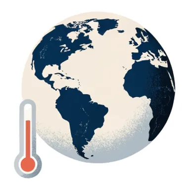
die Erde 지구, 땅
Wir haben nur eine Erde.지구는 하나뿐이에요.
die Temperatur, die Temperaturen 기온
Die Temperaturen steigen jedes Jahr.기온이 해마다 올라요.
die Hitze 더위
Bei dieser Hitze kann ich nicht arbeiten.이런 더위에는 일할 수가 없어요.
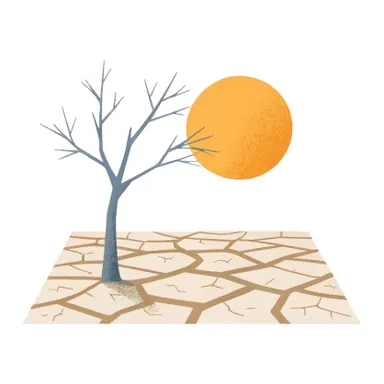
die Dürre, die Dürren 가뭄
Nach der Dürre waren die Felder trocken.가뭄 뒤에 밭이 말라 있었어요.
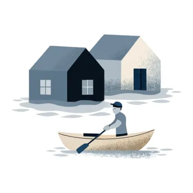
das Hochwasser 홍수
Das Hochwasser hat viele Häuser zerstört.홍수가 집을 많이 부쉈어요.
der Sturm, die Stürme 폭풍
Der Sturm hat Bäume umgeworfen.폭풍이 나무들을 쓰러뜨렸어요.
die Luftverschmutzung 대기 오염
Die Luftverschmutzung macht krank.대기 오염은 병을 일으켜요.
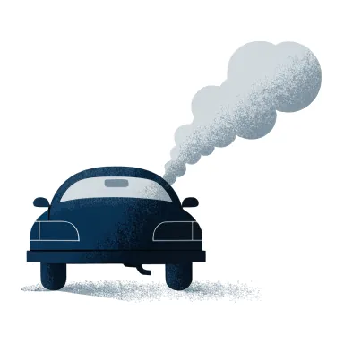
das Abgas, die Abgase 배기가스
Autos produzieren Abgase.자동차는 배기가스를 내요.
der Verkehr 교통
In der Innenstadt gibt es zu viel Verkehr.시내에는 차가 너무 많이 다녀요.
die Pflanze, die Pflanzen 식물
Viele Pflanzen brauchen wenig Wasser.물이 적게 드는 식물이 많아요.
die Tierart, die Tierarten 동물의 종
Viele Tierarten sind in Gefahr.많은 동물 종이 위험에 놓여 있어요.
aussterben (ist ausgestorben) 멸종하다
Diese Tierart stirbt aus.이 동물 종은 사라지고 있어요.
schützen (hat geschützt) 지키다
Wir müssen die Wälder schützen.숲을 지켜야 해요.
zerstören (hat zerstört) 부수다, 파괴하다
Der Sturm hat das Dach zerstört.폭풍이 지붕을 부쉈어요.
verursachen (hat verursacht) 일으키다
Der Verkehr verursacht viel Lärm.교통이 소음을 많이 일으켜요.
erneuerbar 다시 생기는, 재생의
Wind und Sonne sind erneuerbare Energien.바람과 해는 재생 에너지예요.
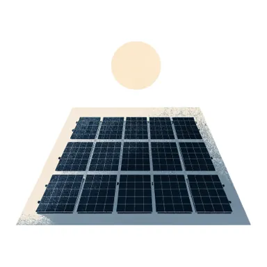
die Solaranlage, die Solaranlagen 태양광 설비
Auf dem Dach ist eine Solaranlage.지붕에 태양광 설비가 있어요.
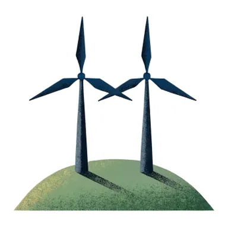
das Windrad, die Windräder 풍력 발전기
An der Küste stehen viele Windräder.바닷가에 풍력 발전기가 많이 서 있어요.
die Kohle 석탄
Früher wurde mit Kohle geheizt.예전에는 석탄으로 난방했어요.
das Gas 가스
Wir heizen mit Gas.우리는 가스로 난방해요.
verbrauchen (hat verbraucht) 쓰다, 소비하다
Der alte Kühlschrank verbraucht viel Strom.오래된 냉장고는 전기를 많이 써요.
verschwenden (hat verschwendet) 낭비하다
Wir verschwenden zu viel Wasser.우리는 물을 너무 많이 낭비해요.
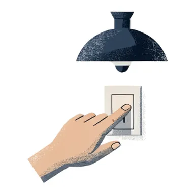
ausschalten (hat ausgeschaltet) 끄다
Bitte schalten Sie das Licht aus.불을 꺼 주세요.
heizen (hat geheizt) 난방하다
Im Winter heizen wir nur zwei Zimmer.겨울에는 방 두 개만 난방해요.
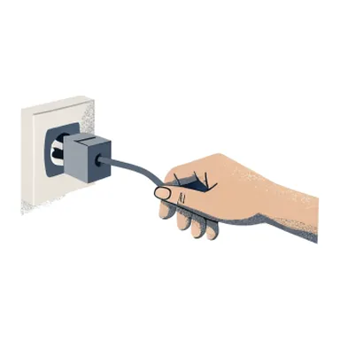
die Steckdose, die Steckdosen 콘센트
Der Laptop hängt an der Steckdose.노트북이 콘센트에 꽂혀 있어요.
das Plastik 플라스틱
Ich kaufe Obst ohne Plastik.저는 플라스틱에 담기지 않은 과일을 사요.
der Abfall, die Abfälle 쓰레기, 폐기물
Jeder Mensch produziert viel Abfall.사람은 누구나 쓰레기를 많이 만들어요.
die Tüte, die Tüten 봉지
Ich brauche keine Tüte, danke.봉지는 필요 없어요, 감사합니다.
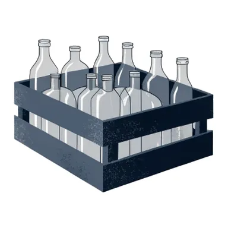
die Mehrwegflasche, die Mehrwegflaschen 다시 쓰는 병
Mehrwegflaschen bringt man zurück.다시 쓰는 병은 도로 가져다줘요.
wiederverwenden (hat wiederverwendet) 다시 쓰다
Gläser kann man gut wiederverwenden.유리병은 다시 쓰기 좋아요.
gebraucht 중고의
Ich habe ein gebrauchtes Fahrrad gekauft.중고 자전거를 샀어요.
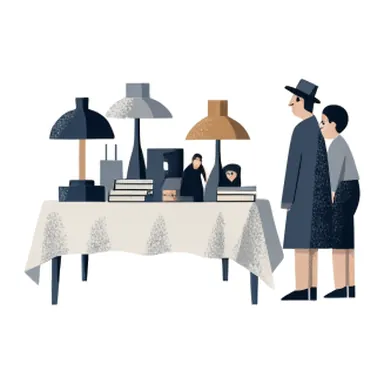
der Flohmarkt, die Flohmärkte 벼룩시장
Am Sonntag ist Flohmarkt am Main.일요일에 마인강 가에서 벼룩시장이 열려요.
tauschen (hat getauscht) 맞바꾸다
Wir tauschen Bücher.우리는 책을 맞바꿔요.
umweltfreundlich 환경에 좋은
Die Bahn ist umweltfreundlicher als das Auto.기차는 차보다 환경에 좋아요.
nachhaltig 오래 이어 갈 수 있는
Wir möchten nachhaltiger leben.우리는 환경을 덜 해치며 살고 싶어요.
die Maßnahme, die Maßnahmen 조치, 대책
Die Stadt plant neue Maßnahmen gegen die Hitze.시가 더위에 맞설 새 대책을 세우고 있어요.
die Regierung, die Regierungen 정부
Die Regierung will mehr Windräder bauen.정부는 풍력 발전기를 더 지으려고 해요.
das Gesetz, die Gesetze 법
Das neue Gesetz gilt ab Januar.새 법은 1월부터 적용돼요.
verbieten (hat verboten) 금지하다
Plastiktüten wurden verboten.비닐봉지는 금지됐어요.
das Verbot, die Verbote 금지
Ich bin gegen ein Verbot.저는 금지에 반대해요.
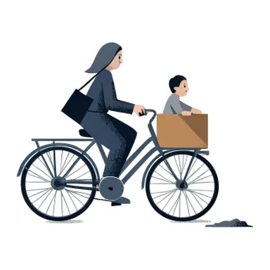
das Lastenrad, die Lastenräder 짐 자전거
Mit dem Lastenrad bringt sie die Kinder zur Schule.그 사람은 짐 자전거로 아이들을 학교에 데려다줘요.
das Carsharing 차량 공유
Statt ein Auto zu kaufen, nutzen wir Carsharing.차를 사는 대신 공유 차량을 써요.
die Bahn 철도, 기차
Ich fahre mit der Bahn nach Hamburg.저는 기차로 함부르크에 가요.
regional 그 지역에서 난
Auf dem Markt kaufe ich regionales Gemüse.시장에서 그 지역 채소를 사요.
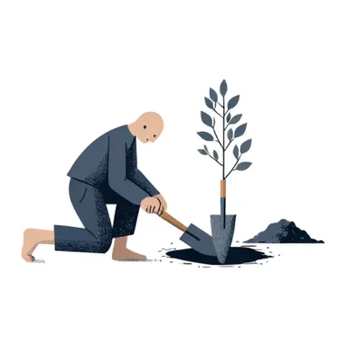
pflanzen (hat gepflanzt) 심다
Die Stadt pflanzt neue Bäume.시가 새 나무를 심어요.
der Baum, die Bäume 나무
Vor dem Haus steht ein alter Baum.집 앞에 오래된 나무가 서 있어요.
lassen (du lässt, hat gelassen) 시키다, 맡기다, 두다
Ich lasse mein Fahrrad reparieren.자전거를 수리 맡겨요.
statt ~하는 대신
Statt zu fliegen, nehme ich die Bahn.비행기를 타는 대신 기차를 타요.
schaden (hat geschadet) 해를 끼치다
Abgase schaden der Gesundheit.배기가스는 건강에 해로워요.
die Ressource, die Ressourcen 자원
Wir müssen Ressourcen sparen.자원을 아껴야 해요.
이 과의 낱말로 여덟 문제를 풀어요.
lassen은 a가 ä로 바뀌는 동사예요.
zu는 Infinitiv 바로 앞에, 나뉘는 동사에서는 가운데에 들어가요.
규칙
내가 직접 하지 않고 다른 사람에게 시키거나 맡기는 일은 lassen과 Infinitiv로 말해요. lassen이 둘째 자리에 오고, 맡기는 일을 나타내는 동사는 Infinitiv로 문장 끝에 와요. du와 er, sie, es에서는 a가 ä로 바뀌어요. 누구에게 맡기는지 말하려면 von을 써요. Wir lassen ihn von Felix tragen.
| 직접 해요 | 맡겨요 |
|---|---|
| Ich repariere das Fahrrad. | Ich lasse das Fahrrad reparieren. |
| Sie schneidet die Haare. | Sie lässt sich die Haare schneiden. |
| Wir prüfen die Geräte. | Wir lassen die Geräte prüfen. |
주의 lassen은 혼자 쓰이면 '두다'라는 뜻이에요. Ich lasse das Auto zu Hause. Lass das Fenster offen. 지난 일을 말할 때는 끝에 lassen을 그대로 써요. Ich habe mein Fahrrad reparieren lassen.
규칙을 보고 바로 확인해 보세요.
Sora … sich die Haare schneiden. 빈칸에 알맞은 말은 무엇인가요?
규칙
어떤 일을 하지 않고 그 대신 다른 일을 한다고 말할 때 statt … zu를 써요. 하지 않는 일이 statt 뒤에 오고, 동사는 zu와 함께 맨 끝에 와요. B1.1에서 배운 um … zu와 모양이 같아요. 나뉘는 동사에서는 zu가 가운데에 들어가요. 두 일을 하는 사람이 같을 때 써요.
| 하지 않는 일 | 그 대신 하는 일 |
|---|---|
| Statt zu fliegen, | nehme ich die Bahn. |
| Statt ein Auto zu kaufen, | nutzen wir Carsharing. |
| Statt alles wegzuwerfen, | reparieren wir es. |
주의 statt 뒤에 명사가 올 수도 있어요. 그때는 B1.1에서 배운 Genitiv를 써요. Statt des Autos nehme ich das Fahrrad. 같은 뜻으로 anstatt이라고도 해요.
규칙을 보고 바로 확인해 보세요.
Ich gehe zu Fuß, statt mit dem Auto … 빈칸에 알맞은 말은 무엇인가요?
규칙
어떤 일을 하면서 다른 일은 하지 않는다고 말할 때 ohne … zu를 써요. 하지 않는 일이 ohne 뒤에 와요. 이 말에 이미 '않고'라는 뜻이 있어서 nicht를 또 쓰지 않아요. 만드는 법은 statt … zu와 똑같아요.
| 하는 일 | 하지 않는 일 |
|---|---|
| Er geht nach Hause, | ohne den Computer auszuschalten. |
| Sie kauft ein, | ohne eine Tüte zu nehmen. |
| Ich habe geantwortet, | ohne lange nachzudenken. |
주의 세 가지를 견줘 보세요. um … zu는 '~하려고', statt … zu는 '~하는 대신', ohne … zu는 '~하지 않고'예요. Ich fahre mit dem Rad, um Geld zu sparen. Ich fahre mit dem Rad, statt den Bus zu nehmen. Ich fahre mit dem Rad, ohne müde zu werden.
규칙을 보고 바로 확인해 보세요.
Sie ist gegangen, ohne ein Wort … 빈칸에 알맞은 말은 무엇인가요?
규칙
환경 이야기에서는 누가 하는지보다 무슨 일이 일어나는지가 중요할 때가 많아요. 그래서 Passiv를 자주 써요. B1.1 5과에서 배운 대로 werden과 Partizip으로 만들어요. 지난 일은 wurde, wurden으로, 조동사가 있으면 Partizip 뒤에 werden을 그대로 써요. 원인이나 하는 쪽은 von이나 durch로 말해요.
| 때 | 보기 |
|---|---|
| Präsens | Der Müll wird getrennt. |
| Präteritum | Plastiktüten wurden verboten. |
| mit Modalverb | Die Umwelt muss geschützt werden. |
| mit von | Die Abgase werden vom Verkehr verursacht. |
주의 lassen과 Passiv는 가까운 사이예요. 둘 다 내가 직접 하지 않는 일을 말해요. Das Gerät wird repariert.는 고쳐진다는 사실만 말하고, Ich lasse das Gerät reparieren.은 내가 맡겼다는 것까지 말해요.
규칙을 보고 바로 확인해 보세요.
In Seoul … jetzt überall Bäume gepflanzt. 빈칸에 알맞은 말은 무엇인가요?
듣고 알맞은 것을 고르세요.
Lena는 무엇을 하자고 하나요?
Statt einen neuen zu kaufen, sollten wir ihn zuerst reparieren lassen.
Markus는 퇴근할 때 어떻게 하나요?
Ich gehe oft nach Hause, ohne den Computer auszuschalten.
Dohyun은 무엇을 타나요?
Nach Hamburg fahre ich nur noch mit der Bahn, statt zu fliegen.
마실 것은 누가 가져오나요?
Die Getränke lasse ich mir liefern.
라디오의 환경 정보 시간이에요. 듣고 답하세요.
Der Umwelttipp der Woche
Radio Und jetzt unser Umwelttipp der Woche. Heute geht es um Strom.
Radio Viele Geräte verbrauchen Strom, auch wenn sie nicht benutzt werden. Der Fernseher, der Drucker und das Ladegerät hängen Tag und Nacht an der Steckdose.
Radio Unser Tipp: Schalten Sie die Geräte ganz aus, statt sie nur schlafen zu lassen. So sparen Sie Geld, ohne auf etwas zu verzichten.
Radio Und wenn ein Gerät kaputt ist: Lassen Sie es reparieren, statt es wegzuwerfen.
Radio Am Samstag von zehn bis vierzehn Uhr findet im Bürgerhaus Bockenheim wieder das Repair-Café statt. Die Reparatur kostet nichts.
Worum geht es heute?
Viele Geräte verbrauchen Strom, auch wenn man sie nicht benutzt.
Was soll man mit den Geräten machen?
Was soll man mit einem kaputten Gerät tun?
Das Repair-Café findet am Sonntag statt.
토요일 10시부터 14시까지예요.
지역 신문의 기사예요. 읽고 답하세요.
Mehr Bäume gegen die Hitze
Frankfurt. Die Sommer in der Stadt werden immer heißer. Deshalb hat die Stadt gestern neue Maßnahmen vorgestellt.
In den nächsten zwei Jahren werden 1.000 neue Bäume gepflanzt, vor allem in Stadtteilen mit wenig Grün.
Außerdem werden zwei große Parkplätze in der Innenstadt in kleine Parks verwandelt.
Auf den Dächern der Schulen sollen Solaranlagen gebaut werden. Die Kosten werden zum Teil vom Land übernommen.
Nicht alle sind zufrieden. Einige Geschäftsleute sind dagegen: „Ohne Parkplätze kommen weniger Kunden.“
Die Stadt antwortet: Statt mit dem Auto sollen mehr Menschen mit der Bahn oder dem Fahrrad in die Innenstadt kommen.
Warum plant die Stadt neue Maßnahmen?
Wie viele Bäume werden gepflanzt?
Aus zwei Parkplätzen werden kleine Parks.
Wer ist gegen die Maßnahmen?
Die Stadt möchte, dass mehr Menschen mit dem Auto kommen.
차 대신 전철이나 자전거로 오기를 바라요.
lassen을 알맞은 모양으로 쓰세요.
Ich mein Fahrrad reparieren. (lassen)
저는 자전거를 수리 맡겨요.
Felix den Laptop die ganze Nacht an. (lassen)
Felix는 노트북을 밤새 켜 둬요.
Wo du dir die Haare schneiden? (lassen)
머리는 어디서 잘라요?
Wir die alten Geräte prüfen. (lassen)
우리는 오래된 기기의 점검을 맡겨요.
ihr das Auto heute zu Hause? (lassen)
여러분은 오늘 차를 집에 두고 가요?
맡기는 일을 맞게 말한 것을 고르세요.
Der Staubsauger ist kaputt. Wir .
청소기가 고장 났어요. 수리를 맡겨요.
lassen 뒤의 Infinitiv에는 zu가 붙지 않아요.
Ich habe keine Zeit zum Kochen. Ich .
요리할 시간이 없어요. 피자를 배달시켜요.
Das Dach ist alt. Der Vermieter .
지붕이 낡았어요. 집주인이 수리를 맡겨요.
Gestern habe ich mein Fahrrad .
어제 자전거를 수리 맡겼어요.
지난 일을 말할 때는 끝에 lassen을 그대로 써요.
statt와 ohne 가운데 알맞은 것을 고르세요.
Er geht aus dem Zimmer, das Licht auszuschalten.
그 사람은 불을 끄지 않고 방에서 나가요.
zu fliegen, nehme ich die Bahn.
비행기를 타는 대신 기차를 타요.
Sie kauft ein, eine Tüte zu nehmen.
그 사람은 봉지를 받지 않고 장을 봐요.
alles wegzuwerfen, reparieren wir die Sachen.
다 버리는 대신 물건을 고쳐요.
Wir können nicht weitermachen, etwas zu ändern.
아무것도 바꾸지 않고 이대로 갈 수는 없어요.
ein Auto zu kaufen, nutzen wir Carsharing.
차를 사는 대신 공유 차량을 써요.
괄호 안의 동사를 zu와 함께 쓰세요.
Er geht, ohne das Licht . (ausschalten)
그 사람은 불을 끄지 않고 가요.
나뉘는 동사에서는 zu가 가운데에 들어가요.
Statt alles , reparieren wir es. (wegwerfen)
다 버리는 대신 고쳐요.
Ich fahre mit der Bahn, statt . (fliegen)
비행기를 타는 대신 기차로 가요.
Sie hat geantwortet, ohne lange . (nachdenken)
그 사람은 오래 생각하지 않고 답했어요.
Statt den Bericht , lesen wir ihn am Bildschirm. (ausdrucken)
보고서를 뽑는 대신 화면으로 읽어요.
Passiv를 다시 봐요. 알맞은 말을 고르세요.
In der Stadt neue Bäume gepflanzt.
도시에 새 나무를 심어요.
Letztes Jahr Plastiktüten verboten.
지난해에 비닐봉지가 금지됐어요.
Die Wälder müssen .
숲을 지켜야 해요.
Der Müll jeden Dienstag abgeholt.
쓰레기는 화요일마다 가져가요.
Die Abgase werden vom Verkehr .
배기가스는 교통 때문에 생겨요.
낱말을 순서대로 눌러 문장을 만드세요.
우리는 청소기를 수리 맡겨요.
비행기를 타는 대신 기차를 타요.
그 사람은 불을 끄지 않고 가요.
마실 것은 배달을 시켜요.
환경을 지켜야 해요.
뜻이 반대인 말을 짝지으세요.
빈칸에 알맞은 낱말을 쓰세요.
Wind und Sonne sind Energien.
바람과 해는 재생 에너지예요.
Der alte Kühlschrank viel Strom.
오래된 냉장고는 전기를 많이 써요.
Am Sonntag ist am Main.
일요일에 마인강 가에서 벼룩시장이 열려요.
Die Bahn ist als das Auto.
기차는 차보다 환경에 좋아요.
듣고 그대로 써 보세요.
음성 준비 중Wir lassen den Staubsauger reparieren. 우리는 청소기를 수리 맡겨요.
음성 준비 중Ich fahre mit der Bahn, statt zu fliegen. 비행기를 타는 대신 기차로 가요.
음성 준비 중Bitte schalten Sie das Licht aus. 불을 꺼 주세요.
Das Problem ist, dass wir zu viel Papier verbrauchen. 문제는 우리가 종이를 너무 많이 쓴다는 거예요.
Jeden Tag werden hunderte Becher weggeworfen. 날마다 컵 수백 개가 버려져요.
Viele Geräte laufen die ganze Nacht. 밤새 켜져 있는 기기가 많아요.
Das schadet der Umwelt und kostet Geld. 그건 환경에 해롭고 돈도 들어요.
Statt alles zu drucken, könnten wir den Bildschirm nutzen. 다 뽑는 대신 화면을 쓰면 돼요.
Wir könnten die alten Geräte reparieren lassen. 오래된 기기는 수리를 맡기면 돼요.
Ich schlage vor, Becher mit Pfand einzuführen. 보증금을 받는 컵을 들여오자고 제안해요.
Das können wir leicht ändern. 그건 쉽게 바꿀 수 있어요.
Ich bin dafür, weil es Geld spart. 저는 찬성이에요. 돈이 절약되니까요.
Das ist eine gute Maßnahme. 좋은 대책이에요.
Da hast du recht. 그 말이 맞아요.
Das sollten wir sofort machen. 그건 바로 해야 해요.
Ich bin dagegen, weil es zu teuer ist. 저는 반대예요. 너무 비싸니까요.
Das ist in der Praxis schwierig. 실제로 하기는 어려워요.
Ein Verbot ist keine Lösung. 금지한다고 풀리지 않아요.
Ich sehe das anders. 저는 다르게 봐요.
Wir könnten es zuerst einen Monat testen. 먼저 한 달 동안 시험해 볼 수 있어요.
Das wäre ein Kompromiss. 그게 타협이 되겠네요.
Ohne die anderen zu fragen, geht es nicht. 다른 사람들에게 묻지 않고는 안 돼요.
Dann schreiben wir den Vorschlag auf. 그럼 제안을 글로 적어요.
과제 고르기
역할 대화와 말하기, 쓰기 과제는 대학 생활과 직장 생활 두 가지예요. 하나를 고르면 다음 과에서도 그쪽 과제가 나와요. 언제든 바꿀 수 있어요.
대화 A에서 역할을 하나 고르세요. 상대의 말은 글로 읽고, 내 차례에는 직접 말해요.
대화 B에서 역할을 하나 고르세요. 상대의 말은 글로 읽고, 내 차례에는 직접 말해요.
내 생활을 떠올리고 칸을 채우세요. 완성된 문장을 소리 내어 읽어 보세요.
Statt mit dem Auto zu fahren, nehme ich das Fahrrad.
Ich lasse meinen Laptop reparieren, statt etwas Neues zu kaufen.
Ich gehe nie aus dem Haus, ohne das Licht auszuschalten.
우리 대학 학생 식당과 카페에서는 날마다 종이컵이 2,000개쯤 버려져요. 나는 학생회에 프로젝트를 제안하려고 해요.
내 생각은 보증금 1유로를 받는 다회용 컵이에요. 컵은 식당에서 씻어서 다시 써요. 자기 컵을 가져오는 학생은 커피를 20센트 싸게 마셔요. 먼저 한 학기 동안 시험해 보자고 하려고 해요.
학생회의 학생이 물어요. 쪽지를 보고 답하세요. 질문을 듣고 소리 내어 답한 뒤 예시 답과 비교해 보세요.
Du hast eine Idee für die Mensa? Was ist das Problem? 학생 식당에 대한 생각이 있다면서요? 뭐가 문제예요?
Jeden Tag werden in der Mensa und im Café ungefähr zweitausend Pappbecher weggeworfen.
Und was schlägst du vor? 그래서 무엇을 제안해요?
Statt Pappbecher zu benutzen, könnten wir Becher mit einem Euro Pfand einführen.
Wer wäscht die Becher? 컵은 누가 씻어요?
Die Becher werden in der Mensa gewaschen und wiederverwendet.
Ich bin nicht sicher. Viele Studenten sind dagegen, weil es Zeit kostet. 잘 모르겠어요. 시간이 걸려서 반대하는 학생이 많아요.
Das verstehe ich. Aber Studenten, die ihren eigenen Becher mitbringen, bezahlen zwanzig Cent weniger.
Und wenn es nicht funktioniert? 잘 안 되면요?
Wir könnten es zuerst ein Semester testen, ohne die Pappbecher sofort zu verbieten.
Ein Vorschlag für den Campus
대학을 더 환경에 좋게 만들 프로젝트를 학생회에 제안하는 글을 써 보세요. 일곱 문장쯤 써요.
Liebe Studierendenvertretung, in unserer Mensa werden jeden Tag ungefähr 2.000 Pappbecher weggeworfen. Das schadet der Umwelt und kostet Geld. Ich schlage deshalb vor, Becher mit einem Euro Pfand einzuführen. Statt die Becher wegzuwerfen, bringt man sie zurück. Sie werden in der Mensa gewaschen und wiederverwendet. Studenten, die ihren eigenen Becher mitbringen, bezahlen 20 Cent weniger. Ich weiß, dass einige dagegen sind, weil es Zeit kostet. Wir könnten das Projekt aber zuerst ein Semester testen, ohne die Pappbecher sofort zu verbieten. Viele Grüße, Minji Choi
다 쓴 뒤에 확인해 보세요.
팀장이 사무실에서 자원을 아낄 방법을 모으고 있어요. 나는 세 가지를 제안하려고 해요.
첫째, 회의 자료를 뽑지 않고 화면에 띄워요. 둘째, 퇴근할 때 컴퓨터와 화면을 꺼요. 지금은 많은 기기가 밤새 켜져 있어요. 셋째, 오래된 노트북 스무 대를 버리지 않고 점검을 맡겨서 쓸 수 있는 것은 학교에 넘겨줘요.
팀장이 물어요. 쪽지를 보고 답하세요. 질문을 듣고 소리 내어 답한 뒤 예시 답과 비교해 보세요.
Sie haben Vorschläge für unser Büro? 우리 사무실에 대한 제안이 있으시다고요?
Ja, drei. Erstens: Statt die Berichte zu drucken, könnten wir sie auf dem Bildschirm zeigen.
Gut. Und zweitens? 좋아요. 둘째는요?
Viele Geräte laufen die ganze Nacht. Die Computer sollten abends ausgeschaltet werden.
Was machen wir mit den alten Laptops im Keller? 지하실의 오래된 노트북은 어떻게 하죠?
Wir könnten sie prüfen lassen, statt sie wegzuwerfen. Die Geräte, die noch funktionieren, geben wir an Schulen weiter.
Kostet das nicht viel? 돈이 많이 들지 않나요?
Nein. Wir sparen sogar Geld, ohne auf etwas zu verzichten.
Einverstanden. Wie fangen wir an? 알겠어요. 어떻게 시작할까요?
Ich schlage vor, alles zuerst einen Monat zu testen. Danach berichte ich dem Team.
Vorschläge für ein grüneres Büro
사무실에서 자원을 아끼는 방안을 팀장에게 메일로 제안해 보세요. 일곱 문장쯤 써요.
Sehr geehrte Frau Hoffmann, Sie haben nach Vorschlägen gefragt, wie wir im Büro Ressourcen sparen können. Ich habe drei Ideen. Erstens könnten wir die Berichte auf dem Bildschirm zeigen, statt sie zu drucken. Zweitens sollten die Computer und Bildschirme abends ausgeschaltet werden. Viele Kollegen gehen nach Hause, ohne ihre Geräte auszuschalten. Drittens könnten wir die alten Laptops im Keller prüfen lassen, statt sie wegzuwerfen. So sparen wir sowohl Geld als auch Energie. Ich schlage vor, die Maßnahmen zuerst einen Monat zu testen. Mit freundlichen Grüßen, Minji Choi
다 쓴 뒤에 확인해 보세요.
Ich kann ein Umweltproblem in meinem Alltag beschreiben.내 둘레의 환경 문제를 설명할 수 있어요.
Ich kann Lösungen vorschlagen und begründen.해결책을 제안하고 이유를 댈 수 있어요.
Ich kann sagen, ob ich dafür oder dagegen bin.찬성인지 반대인지 말할 수 있어요.
Ich kann sagen, was ich machen lasse und was ich stattdessen tue.무엇을 남에게 맡기는지, 무엇을 대신 하는지 말할 수 있어요.